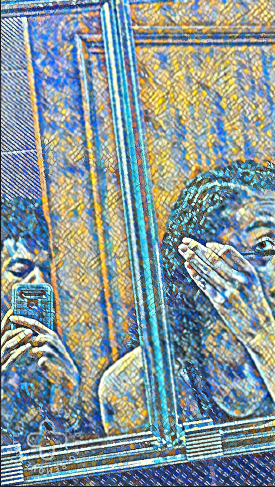
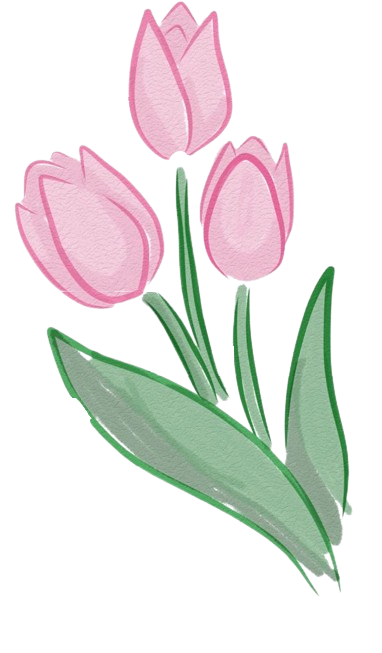
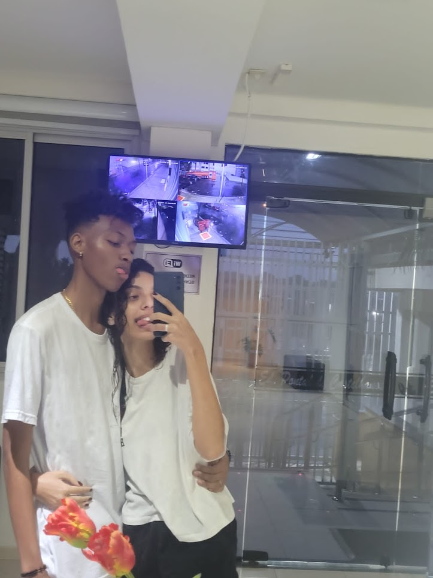
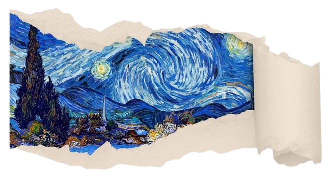
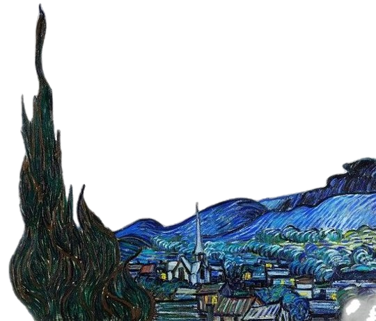

Sentimento de carinho e demonstração de afeto.
É olhar juntos na mesma direção. A suprema felicidade da vida.
É a força mais sutil do mundo.
E eu te amo.


E foi ai que eu que tô acostumado a ser indomável, acabei encontrando uma mina que é imprevisível. E justo eu, que nunca me prendi a nada, me vi querendo amanhecer com ela. ♡


Amar-te é roçar o infinito com os dedos trêmulos da alma. Como escreveu Victor Hugo, “amar ou ter amado, isso basta; não se exige outra pérola aos esplendores da vida.” Há, em cada gesto de ternura, uma centelha do eterno — um eco daquilo que Platão concebeu como “o desejo de completar-se”, como se cada ser fosse a metade errante de um todo há muito perdido. Fernando Pessoa asseverou que “amar é pensar”; talvez por isso o amor resida tanto nos silêncios quanto nas palavras, tanto nos olhares quanto nas confissões da alma.

Nietzsche advertia que “há sempre alguma loucura no amor, mas há sempre um pouco de razão na loucura”; e quem já amou profundamente sabe que o coração, com frequência, se precipita onde a razão vacila. Shakespeare ousava afirmar que “o amor não vê com os olhos, mas com a mente”, e eu, não menos audacioso, alinho-me a tal visão — pois somente assim há de se explicar meu fascínio por cada ínfimo detalhe teu.
JE T'AIME MON AMOUR
O rapaz aí só amou o tal amarelo porque nunca teve a chance de apreciar o brilho dos seu olhos. 🌻